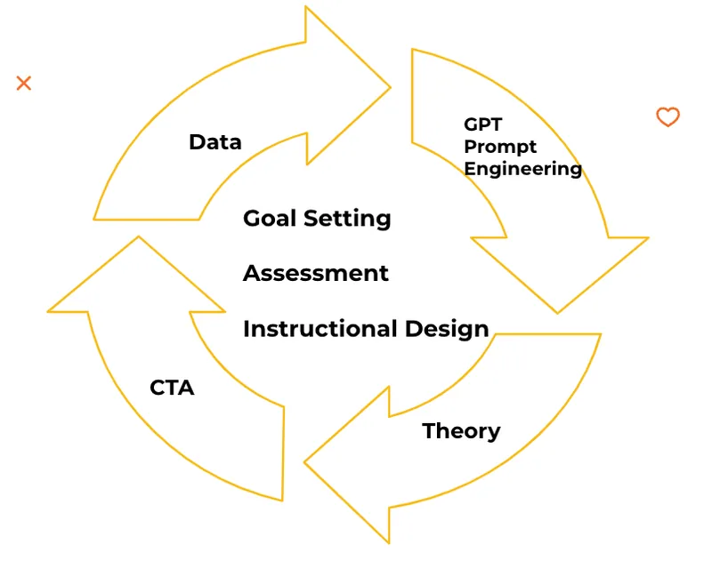
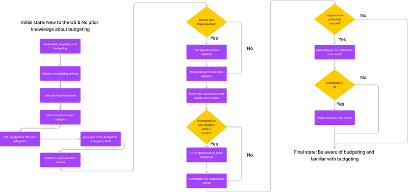
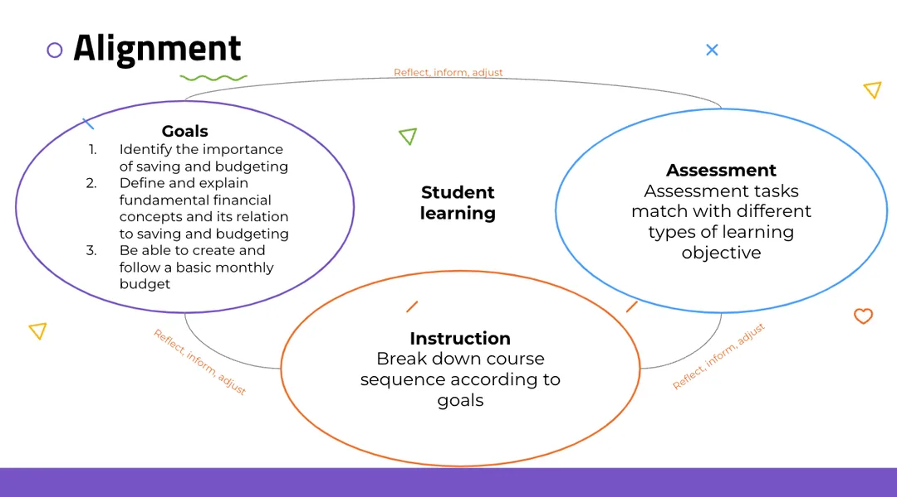
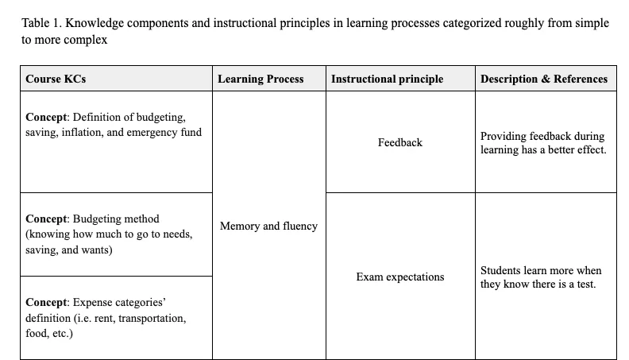
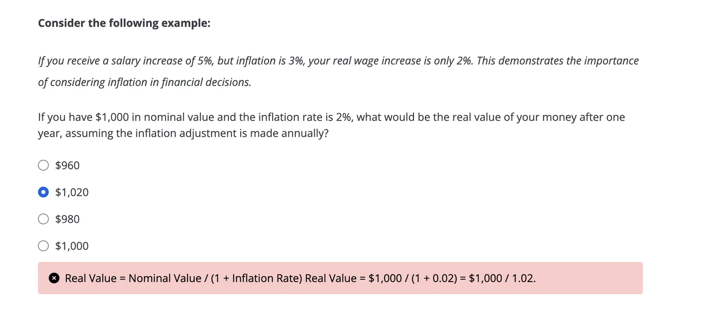
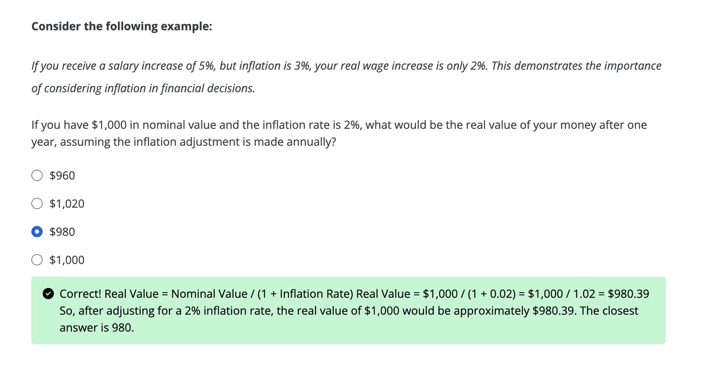
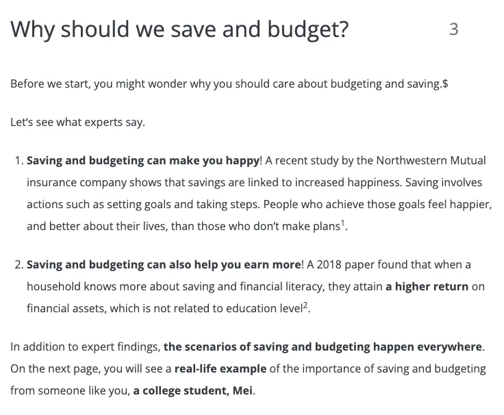

Project Overview
We designed a 30-minute introductory course for university students to learn about saving and budgeting, using innovative and research-proven learning science principles. We used an AI-generated video using a script we wrote for the innovative approach. A pre and post-test experiment shows that participants have an average 16% increase in quiz scores.
Link: https://proton.oli.cmu.edu/sections/saving_and_budgeting__intro_to/enroll
Try out the course
Problem
Financial literacy is a strong predictor of retirement planning and wealth and leads to better investment outcomes. 30-40% of wealth inequality near retirement is accounted for by financial literacy.
Meanwhile, the general public has a low financial literacy level, and there are no widely established courses.
Solution
The nature of online courses enables accessibility for universities without sufficient resources in the status quo. The use of AI-generated videos aims to increase students' motivation.
Read the final report here.
Tools
- OLI Torus
- Figma
- D-ID
Team
- 1 learning designer (me)
- 1 UI/UX designer
- 1 developer
- 1 project manager
My Role
- Instructional Design
- Research
- Project management
Timeline
- Oct 2023 - Dec 2023
My Design Process
- 1Design Model
- 2Cognitive Model Iteration
- 3Design Alignment
- 4Instructional Principles
- 5Learner Testing
- 6Next Steps

Design Model
Adapted from E-Learning Principles, this course design uses data, GPT prompt engineering, Cognitive Task Analysis (CTA), and theory to design and iterate goals, assessment, and instructional design.
Button
Cognitive Model Iterations
During the ideation phase of the Cognitive Task Analysis Model, I conducted both expert's structured interviews and 2 rounds of novice think-aloud.
The key findings are:
- Learners do not normally see the importance of financial literacy.
- Learners do not plan for emergency funds.
- Learners do not strategically reflect on their savings and budgeting.
However, these are the key steps described in the expert interview. Thus, these steps are included in the cognitive model to ensure that learners can acquire all the necessary skills for saving and budgeting.


Design Alignment
To align goals, assessment, and instruction, we begin by setting up clear learning objectives. Keeping our goals in mind, we designed assessments that precisely measure the intended outcomes, with assessment tasks that match different types of learning objectives.
We also develop instructional strategies that align with those objectives and prepare students for assessments.
Instructional Principles
We choose Embodiment & Multimedia as our innovative principle. From the expert interview, we learned that financial literacy is a personal topic, so people tend to prefer to listen to people with similar backgrounds. Videos with this type of speaker can be persuasive and increase learners' motivation.
From CTA, we categorized the knowledge components of all necessary steps to achieve the goal. We chose the following research-proven principles targeting specific knowledge components:
- Learning by Doing
- Personalization
- Self-Explanation
- Worked Example
- Immediate Feedback
Link: https://www.youtube.com/shorts/h-n1yCo-8Fg?feature=share
Click here to see the AI-generated video

Embodiment & Multimedia
Here is the AI-generated video embedded in the course module.
Immediate Feedback
Here are two examples of immediate feedback when learners work on a multiple-choice question:


Learner Testing
We conducted two rounds of learner testing, focusing on both usability and learning.
The key takeaways are:
- Modules need to be closely connected. Learners do not see why certain module is related to saving and budgeting, such as inflation.
- AI-generated video should use a more casual tone to sound more like a college-age student.
- Open-ended questions need to provide more guidance to avoid unguided learning.

Next steps
We did not find significant differences from our A/B testing. Here are some possible ways to look ahead.
01
We used an AI video instead of a human video. Based on the personalization principle, a human instructor might have a better effect.
It might be more effective to use a recorded video of a human instructor. Although we use a personal tone and a college-age AI avatar as the video instructor, this selection is not general enough.
02
Our innovative principle is the embodiment principle, which can also be counterproductive as a violation of coherence: Overly immersive or physically demanding learning experiences can overwhelm learners with sensory input. This sensory overload or distraction can make it difficult for learners to focus on the core concepts being taught, leading to reduced coherence in the learning process.
Learnings
- Empirical Cognitive Task Analysis. I interviewed both novices and experts in the financial literacy domain. Asking appropriate questions during think-aloud is crucial to gaining true novice insights.
- Learner Testing. We iterated our design based on two rounds of learner testing feedback. I learned to synthesize the feedback and designed plans of iteration.
- Instructional Design. I was able to implement theories of learning sciences into a real application, and I need to be aware of the effect of employing different theories at the same time - they may become counter-productive if not designed carefully.
Thank you for reading my project!
If you are interested, feel free to check out my other projects!